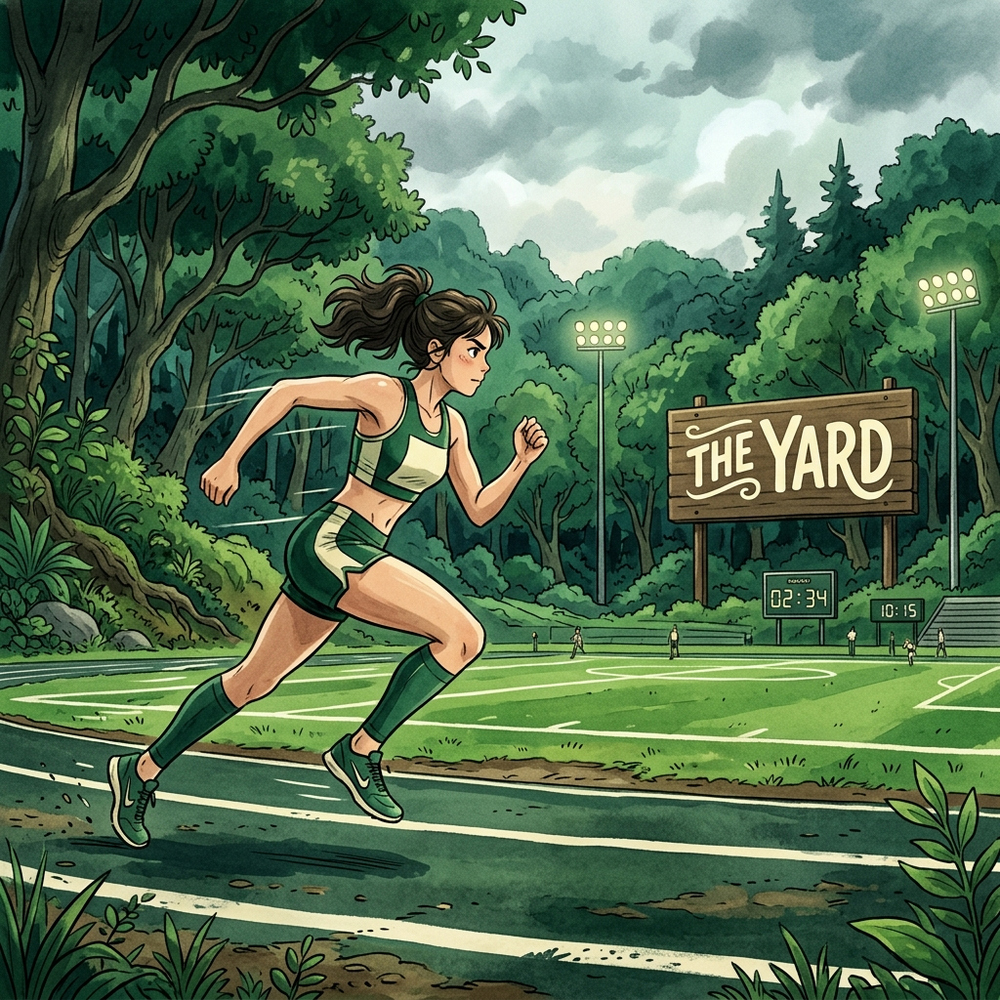
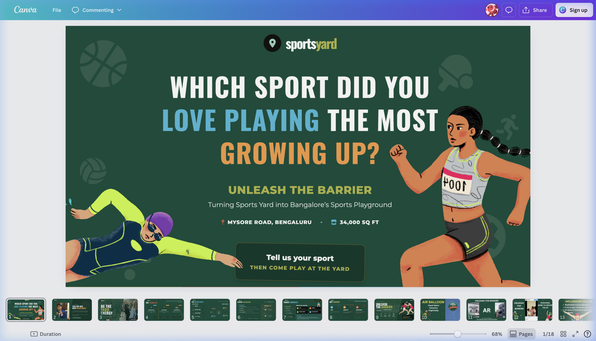
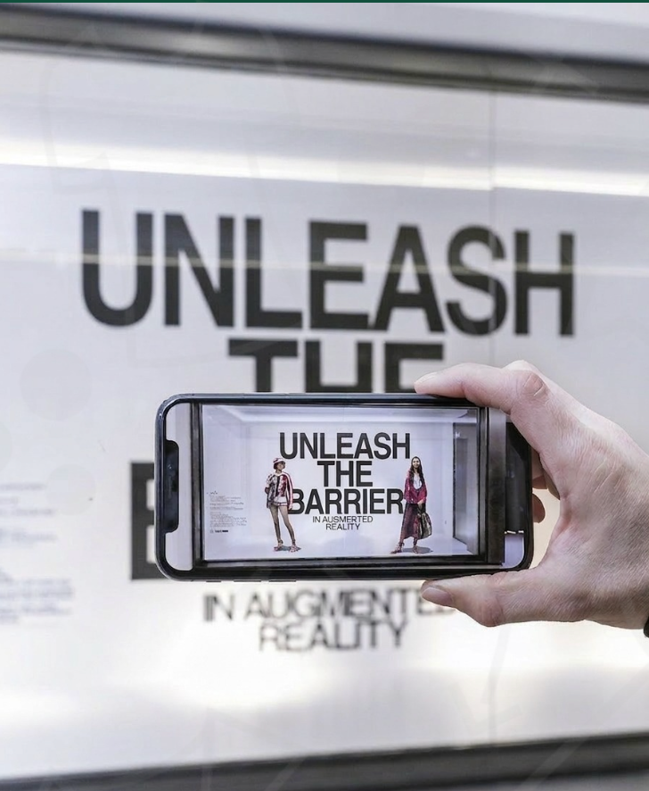

"Unleash the Barrier. In Augmented Reality."
Every visual was engineered to feel like it belonged on a regional sports ground — not in a boardroom. We made sports culture the aesthetic, not the afterthought.

Grassroots Athletics 🏃♀️SportsYard entered a space dominated by ESPN, JioSports, and BCCI's own channels. The content was solid — but the brand was invisible. Generic sports media positioning with zero emotional hook, no community identity, and no clear reason for a fan to choose SportsYard over anything else.

"Regional sports fans are the most loyal audience in India. They're also the most underserved. That's the gap."
The brief was ambitious: build brand identity, drive regional community adoption, and create content formats that generate organic sharing — without a celebrity-level budget.
Instead of a campaign, we built a system. An A-to-Z content architecture where every stage of audience awareness had a specific format, channel, and conversion mechanism assigned to it.
Mothers of young athletes drive 90% of sports class enrollment decisions. Targeting them = free community adoption at the grassroots level.
"Unleash the Barrier in Augmented Reality" — physical posters that come alive when scanned. Made fans feel like they were inside SportsYard's world.
Branded presence at regional sports tournaments, school games, and local cricket leagues — where the real fans actually are.
Identified 50+ regional mother-of-athlete influencers across 8 cities. Not mega-influencers — hyper-local community anchors with 1K–10K engaged followers, 10× the trust.
Printed "Unleash the Barrier" posters at regional sports venues. When fans pointed their phone cameras at the poster, it triggered an AR sports experience — team highlight reels, player stats, game countdowns.
Sponsored 12 regional youth tournaments. Not as banner-advertising — as content partners, filming hero moments and giving local athletes a platform with real production value.
Top MOM-fluencers became brand ambassadors. Their organic endorsement carried more weight than any paid ad — community trust at scale, zero celebrity budget.